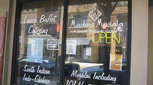
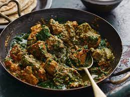
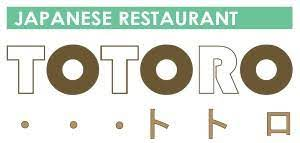

If I had to pick a favorite cuisine, it would have to be Asian. While this umbrella term categorizes many different cultures and tastes, I feel as though my tastebuds align with many of the flavors found in all the countries of Asia.
Below are just some of my favorite asian resaurants, including two right here in Ann Arbor. The first is Madras Masala, an authentic Indian resturant situated on Maynard street, just a few minutes away from campus. My favorite dishes include the Lamb Saag as depicted below, as well as the fish Tikka Masala. I also love getting a side of garlic naan to dip into my curry, and often find myself with enough leftovers to have lunch the next day with a steaming bowl of rice.
  